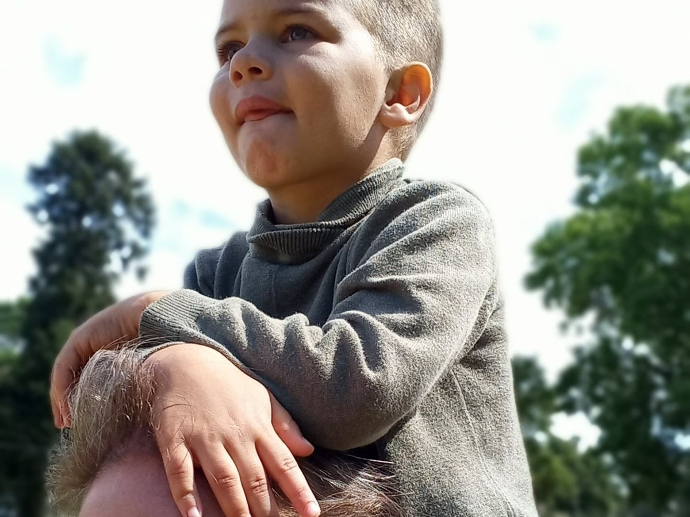
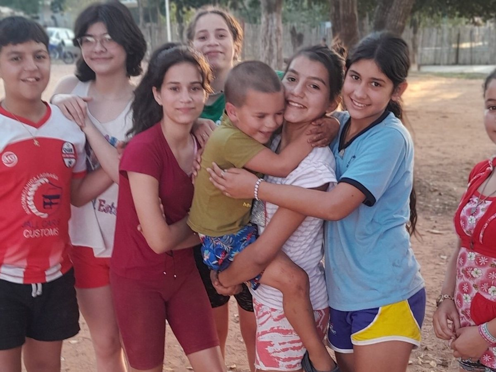

What Does Lifelong Support Actually Mean?
Lifelong support is more than having someone available in an emergency. It means building a dependable structure around an adult’s safety, health, relationships, housing, daily life, and dignity—one that can continue even when parents age, caregivers change, and needs become more complex.

When parents hear the phrase lifelong support, it can sound both reassuring and impossibly large.
Does it mean someone must supervise every moment?
Does it mean the person can never make decisions?
Does it mean living in the same place forever?
Does it mean a parent has to solve the next sixty years before their child reaches adulthood?
No.
Lifelong support does not mean predicting every future need perfectly. It means accepting one central truth:
If an adult will always need some level of help, the support system must be designed to last longer than any one parent, caregiver, employee, home, or funding source.
My son Samuel is profoundly autistic, nonverbal, and has significant cognitive delays. He learns new things. He surprises me. He enjoys his life. He has preferences, humor, routines, favorite people, and strong opinions that he communicates without speech.
He will also likely need substantial support for the rest of his life.
Those two truths do not compete.
His growth is real.
His lifelong needs are also real.
Planning well requires us to hold both.
Lifelong support is not the same as constant control
Support should not become an excuse to erase adulthood.
An adult may need help with medication, transportation, meals, personal care, communication, money, safety, and medical decisions while still making meaningful choices about:
- what to wear;
- what to eat;
- how to decorate a room;
- which activities to join;
- which people they enjoy;
- what music or television they prefer;
- when they need quiet;
- whether they want company;
- and how they want ordinary days to feel.
The goal is not to make every decision for the person because some decisions are difficult.
The goal is to provide enough help that the person can safely exercise the choices they are able to make.
Good lifelong support asks:
- Where can the person decide independently?
- Where do they need information presented differently?
- Where do they need reminders or physical help?
- Where is formal legal authority necessary?
- What safety systems expand freedom?
- What restrictions are genuinely necessary?
- Which restrictions exist only because they are convenient for caregivers?
Support should make life more possible.
It should not make the adult disappear inside the support plan.
Lifelong support is a system, not a single caregiver
Many family plans quietly depend on one person.
A parent assumes a sibling will take over.
A grandparent promises to help.
One devoted aunt knows the routines.
One caregiver becomes indispensable.
That person may be loving, responsible, and sincere. They may still become ill, move away, experience financial hardship, burn out, divorce, die, or simply reach the limit of what one individual can sustain.
A durable plan must be larger than one good person.
It usually needs several layers:
- Legal authority
- Stable housing
- Reliable daily care
- Medical and communication knowledge
- Financial resources
- Public benefits and services
- Emergency backup
- Relationships and community
- Oversight and accountability
- A plan for aging and changing needs
No single person should have to carry all ten.
That is why lifelong planning is organizational work, even when it begins inside a family.
Support should be built around the actual person
Generic support plans fail because autistic and developmentally disabled adults are not interchangeable.
Two people with the same diagnosis may need completely different environments.
One person may need:
- very low noise;
- predictable meals;
- a private room;
- visual schedules;
- regular walking;
- help with toileting;
- and someone who recognizes subtle signs of pain.
Another may need:
- frequent social interaction;
- support using public transportation;
- help managing money;
- medication reminders;
- protection from scams;
- and coaching through unexpected changes.
A lifelong support plan should document the person’s individual patterns.
Communication
How does the person express:
- yes;
- no;
- pain;
- fear;
- hunger;
- fatigue;
- illness;
- overload;
- affection;
- boredom;
- and the desire to leave?
What does silence mean?
What behavior usually signals discomfort?
What changes in routine may indicate sickness?
Regulation
What helps the person feel calm?
What makes distress worse?
Do they need:
- movement;
- pressure;
- music;
- dim lighting;
- water;
- a familiar object;
- time alone;
- predictable language;
- or one trusted person nearby?
Daily life
What foods feel safe?
What time do they naturally wake?
How do they tolerate bathing, grooming, dental care, and medication?
Which routines are comforting?
Which activities bring genuine joy?
What does an ordinary good day look like?
Safety
Does the person wander?
Can they recognize fire, traffic, strangers, spoiled food, or unsafe equipment?
Can they summon help?
Do they understand private versus public behavior?
Are they vulnerable to coercion or manipulation?
Relationships
Who matters to them?
Whom do they trust?
Who understands their communication?
Which traditions, holidays, faith practices, songs, foods, or places carry emotional meaning?
Lifelong support depends on preserving this knowledge so the person does not become a stranger when family members are no longer present.
Housing and support are connected, but they are not identical
A home is a place.
Support is what makes the life inside that place possible.
Families sometimes focus on finding the right building without asking who will provide the help.
Others focus on services without asking whether the housing itself is stable, affordable, sensory-appropriate, and safe.
A complete plan needs both.
Possible housing arrangements may include:
- living with family;
- an individual apartment with scheduled support;
- supported apartment living;
- shared living or a host home;
- a staffed group home;
- or a residential community designed for adults with lifelong support needs.
The right model depends on the person.
But every model should answer the same practical questions:
- Who is present overnight?
- What happens when staff call in sick?
- Who manages medication?
- Who recognizes illness?
- Who coordinates appointments?
- Who helps with food and personal care?
- Who responds to wandering or unsafe behavior?
- Who manages benefits and paperwork?
- Who notices neglect?
- Who listens when the resident communicates no?
- Can the person remain if their needs increase?
- What happens if the housing provider closes?
A bed is not a lifelong plan.
A dependable system around the person is.
Lifelong support must include ordinary life
It is possible to keep someone physically safe while giving them a very small life.
That is not enough.
Lifelong support should include:
- privacy;
- relationships;
- familiar routines;
- community access;
- recreation;
- rest;
- spiritual life where desired;
- celebrations;
- preferred foods;
- movement;
- quiet;
- and meaningful choices.
An adult should not have to spend every hour in therapy, classes, employment training, or structured programming to justify their support.
Some people enjoy busy schedules.
Others need long periods of low-demand time.
Some want to work.
Others may never hold traditional employment.
Some enjoy groups.
Others prefer one familiar person and a quiet room.
A meaningful life does not have one approved shape.
Support should make room for the person’s actual life rather than forcing the person into a program’s definition of success.
Relationships are part of support
Lifelong care is sometimes described only in terms of staffing, medication, meals, and hygiene.
Those things matter.
But people also need to be known.
They need familiar voices.
They need people who notice when they are unusually quiet.
They need someone who understands why a certain song matters, why one meal must be prepared a particular way, or why a small change in posture may mean pain.
They need people who remember birthdays, traditions, favorite places, family stories, and the difference between peaceful solitude and dangerous withdrawal.

That sense of belonging matters to me.
Sam is not treated here as a problem to solve before he can participate in community life. Children approach him naturally. Neighbors greet him. People make room for his differences without needing a formal program to explain every interaction.
No culture is perfect, and affection alone cannot replace professional care, legal protection, training, or oversight.
But lifelong support without real human relationship can become technically competent and emotionally empty.
The best support combines both:
- practical protection;
- and genuine belonging.
Families need backup before they need replacement
The long-term plan should not begin only when a parent dies.
It should begin when the parent is still present and able to teach, observe, correct, and build trust.
Backup support may start with:
- respite care;
- a trusted relative learning routines;
- an approved support worker;
- short stays outside the family home;
- another adult attending appointments;
- shared access to important documents;
- and emergency instructions that someone besides the parent can follow.
The first goal is not to replace the parent.
It is to make sure the family is not one illness away from collapse.
Ask:
- Who could care for the person for three hours?
- Who could stay overnight?
- Who could manage one week?
- Who could make medical decisions?
- Who could access benefits information?
- Who knows the medication schedule?
- Who can calm the person during distress?
- Who could step in tomorrow without learning everything during an emergency?
The gaps in those answers reveal where planning should begin.
A written care guide is one of the most valuable tools a family can create
Parents carry thousands of details in their heads.
The yellow cup, not the blue one.
The medication hidden in applesauce.
The sound that means pain rather than frustration.
The television program that helps after a difficult appointment.
The way the person reacts before a seizure.
The food they will accept when sick.
The phrase that escalates fear.
The route they expect to take home.
These details may look small until the person who knows them is unavailable.
Create a written guide that includes:
Basic information
- full legal name;
- date of birth;
- diagnoses;
- identification documents;
- insurance;
- benefits;
- legal decision-makers;
- emergency contacts.
Medical information
- medications and dosages;
- allergies;
- physicians;
- pharmacy;
- seizure or emergency plans;
- signs of pain and illness;
- past procedures;
- medical fears;
- effective accommodations.
Communication
- speech, AAC, gestures, signs, pictures, or behavior;
- how yes and no are expressed;
- how pain is shown;
- what distress looks like;
- how choices should be offered;
- words or approaches to avoid.
Daily routines
- waking;
- meals;
- hygiene;
- medication;
- transportation;
- preferred activities;
- bedtime or nighttime patterns;
- sensory needs;
- safe foods.
Safety
- wandering risk;
- traffic awareness;
- water safety;
- stranger vulnerability;
- household risks;
- emergency response;
- supervision needs.
Relationships and identity
- important people;
- family traditions;
- faith or spiritual preferences;
- favorite music;
- meaningful dates;
- comfort objects;
- favorite places;
- dislikes;
- personal history.
Update the guide regularly.
A support plan that survives only in one parent’s memory is not yet durable.
Money should protect support without controlling the person
Lifelong support costs money.
That does not mean the adult’s life should be organized around whoever has the most money.
Financial planning may involve:
- SSI or SSDI;
- Medicaid;
- waiver services;
- an ABLE account;
- a special-needs trust;
- life insurance;
- housing assistance;
- family contributions;
- charitable resources;
- or organizational funding.
The exact combination will vary.
Families should work with professionals who understand disability benefits before moving assets, changing beneficiaries, or leaving an inheritance directly to a person who relies on means-tested programs.
But money is only one part of the system.
A well-funded trust cannot personally recognize pain.
A benefit payment cannot provide affection.
A large inheritance cannot guarantee a trustworthy caregiver.
Financial planning must connect to legal authority, housing, staffing, oversight, and relationships.
The purpose of money is to make the support durable.
It should not make the person easier to control.
Oversight protects both residents and good caregivers
Even excellent caregivers need accountability.
Long-term support should not depend on one person working privately without review.
Possible safeguards include:
- regular visits from more than one trusted person;
- documented care plans;
- medication records;
- financial reporting;
- background checks;
- staff supervision;
- grievance procedures;
- mandatory reporting;
- independent advocates;
- periodic medical review;
- and a clear process for responding to concerns.
Multiple people should know the resident.
Multiple people should be able to notice changes.
Multiple people should have legitimate ways to ask questions.
This is not about assuming everyone is dangerous.
It is about recognizing that isolation creates risk.
Good caregivers are also protected by clear expectations, documentation, training, backup staff, and a process for raising concerns before they become crises.
Lifelong support must adapt as the person ages
The support a person needs at 22 may not be the support they need at 52.
Aging may bring:
- mobility loss;
- chronic illness;
- medication changes;
- dementia;
- vision or hearing loss;
- seizures;
- cancer;
- sleep disruption;
- increased personal-care needs;
- grief;
- and declining tolerance for disruption.
Housing should anticipate those changes where possible.
Questions to ask include:
- Can the bathroom become accessible?
- Can the person remain if they need a wheelchair?
- Is there room for medical equipment?
- Can overnight staffing increase?
- Can the person receive hospice care at home?
- Will the provider remove residents when care becomes expensive?
- Who makes medical decisions after parents die?
- Can familiar routines be preserved during decline?
A lifelong promise becomes meaningful when care grows with the person instead of ending when the person becomes harder to support.
What lifelong support does not mean
It does not mean:
- controlling every choice;
- assuming no growth is possible;
- forcing participation in programs;
- requiring work;
- treating an adult like a child;
- preventing all risk;
- isolating the person from community;
- or keeping someone in one arrangement when a safer and more desired option becomes possible.
Lifelong support is not lifelong possession.
If an adult gains skills and can safely live with less support, the system should adapt.
If the person clearly wants a different arrangement, that desire should be taken seriously.
The promise is not:
You can never leave.
The promise is:
You will not be abandoned.
This week’s checklist
Do not build the entire lifelong system this week.
Strengthen one layer.
Start the one-page emergency profile
Create a single page with:
- name and photo;
- diagnoses;
- communication method;
- medications;
- allergies;
- emergency contacts;
- legal decision-maker;
- calming strategies;
- safety risks;
- and the most important things another caregiver needs to know.
Keep a printed copy and a secure digital copy.
Identify three support roles
Write down the names—or blank spaces—for:
- A person who could provide a few hours of support
- A person who could respond during an overnight emergency
- A person who could help manage legal, medical, or financial decisions
One person may not be able to fill every role.
Blank spaces are useful. They show what must be built.
Document one routine
Choose one ordinary routine:
- morning;
- medication;
- bathing;
- leaving the house;
- meals;
- or bedtime.
Write it step by step as though someone unfamiliar with the person must follow it tomorrow.
Include what usually goes wrong and what helps.
Review the backup plan
Ask:
- What happens if I am hospitalized tonight?
- Who has keys?
- Who has permission to make decisions?
- Who knows the medications?
- Who can access insurance information?
- Who can stay with my child?
- What if the first person is unavailable?
Write down the current answer, even if it is incomplete.
Schedule one conversation
Choose one:
- a future caregiver;
- a sibling or relative;
- a disability attorney;
- a financial planner;
- a case manager;
- a residential provider;
- a respite organization;
- or another parent who has built a durable plan.
Ask one specific question rather than trying to solve everything.
Add one relationship goal
Lifelong support is not only paperwork.
Identify one way to widen the person’s circle:
- a familiar neighbor;
- a church or community connection;
- a regular respite worker;
- a recreational group;
- a trusted family friend;
- or someone who can learn one routine.
The goal is not popularity.
The goal is that more than one person knows and values the adult.
The real test of lifelong support
The real test is not whether the plan looks impressive on paper.
It is whether the person remains safe, known, respected, and at home when life becomes difficult.
Does the system still work when a parent dies?
When a caregiver quits?
When funding is delayed?
When the person becomes ill?
When communication changes?
When care becomes more expensive?
When the adult refuses something?
When the organization changes leadership?
When public attention disappears?
Lifelong support means building for those days before they arrive.
It means creating a structure strong enough to survive change and humane enough to keep seeing the person inside it.
My son should never have to earn the right to remain safe.
He should never have to become independent enough, productive enough, easy enough, or inspiring enough to deserve a home.
He should be allowed to grow.
He should be allowed to need help.
He should be allowed to be an adult whose life is valuable exactly as it is.
That is what lifelong support should mean.
About Casa de SAM
Casa de SAM is a developing vision for a lifelong residential community in Paraguay for adults with developmental disabilities who need ongoing support. We believe joyful living is inherently valuable, and our promise is that once a resident is fully accepted, Casa de SAM will care for them for life. The project is currently in its planning and organizational stage, with a long-term goal of opening in 2035. Casa de SAM is not yet a registered nonprofit and is not currently accepting donations.
This article was written in July 2026 and provides general educational information for families. Disability services, housing, benefits, guardianship, medical decision-making, and long-term-care options vary by location and individual circumstances, and laws, funding, policies, and agency procedures can change over time. Casa de SAM will make every reasonable effort to review and update this article, but families should confirm current information with their local agencies and qualified legal, financial, medical, educational, and disability-services professionals.